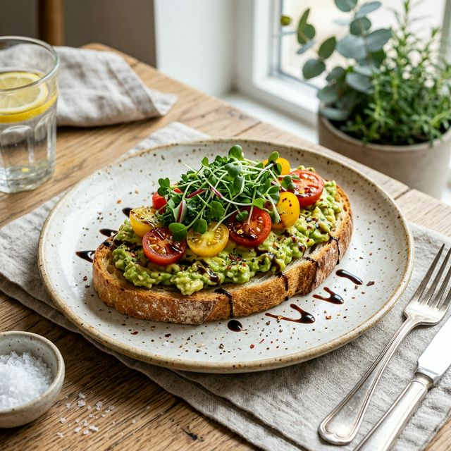

Gourmet Avocado Toast
Elevate your morning routine with this gourmet take on an absolute classic. The right balance of crispy sourdough, rich creamy avocado, and the tanginess of balsamic glaze makes this not just a breakfast, but a colorful visual and gastronomic experience.
Ingredients
- 1 thick slice of artisanal sourdough bread
- 1 ripe avocado
- 1/2 cup cherry tomatoes, halved
- A handful of fresh microgreens or arugula
- 1 tbsp balsamic glaze
- 1 tsp extra virgin olive oil
- Flaky sea salt (like Maldon) and red pepper flakes
- A squeeze of fresh lemon juice
Instructions
Step 1: Toast your slice of sourdough bread to your desired level of golden-brown crispiness.
Step 2: Halve the avocado, remove the pit, and scoop the flesh into a bowl. Add a squeeze of lemon juice, a pinch of salt, and mash it with a fork. Keep it a little chunky for texture!
Step 3: Spread the mashed avocado evenly onto your warm sourdough toast.
Step 4: Top the avocado with halved cherry tomatoes and a generous heap of fresh microgreens.
Step 5: Gently drizzle the extra virgin olive oil and the balsamic glaze over the top.
Step 6: Finish with a sprinkle of flaky sea salt and red pepper flakes. Serve immediately and enjoy with a cup of fresh coffee.